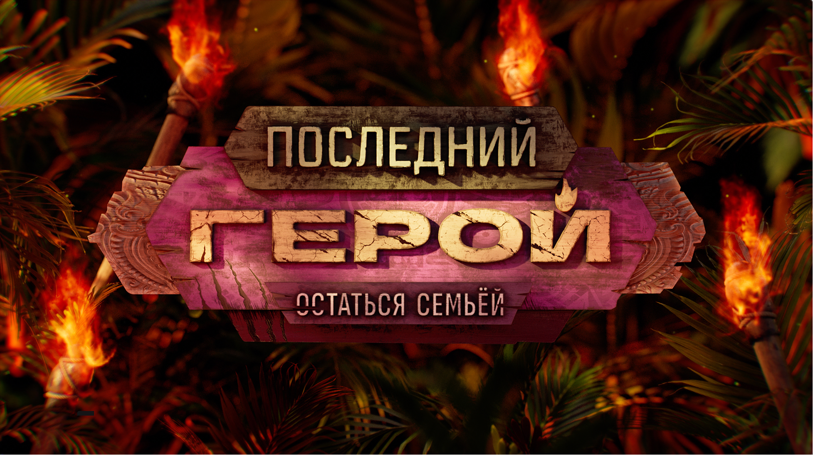
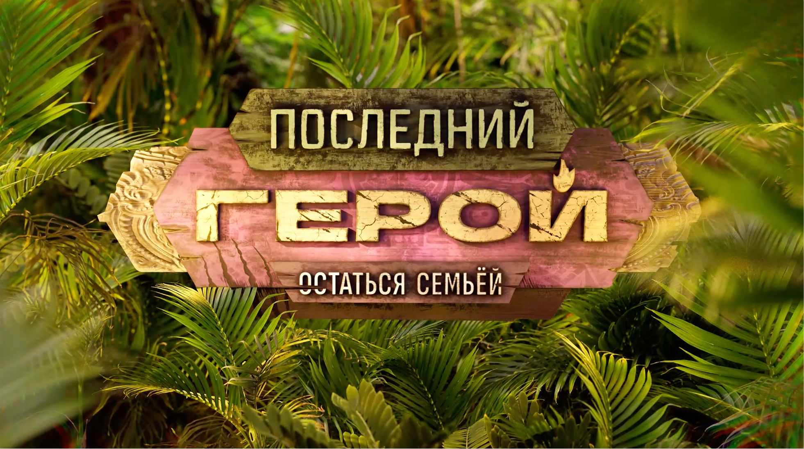
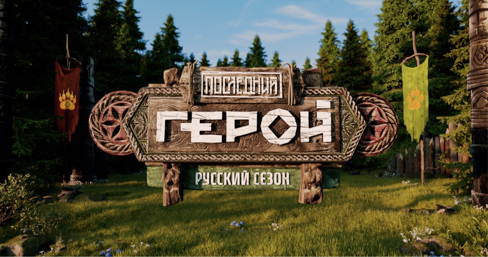
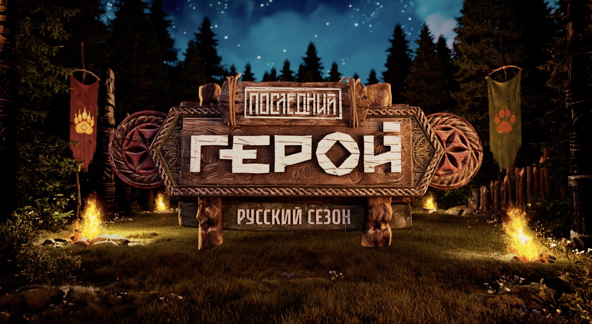
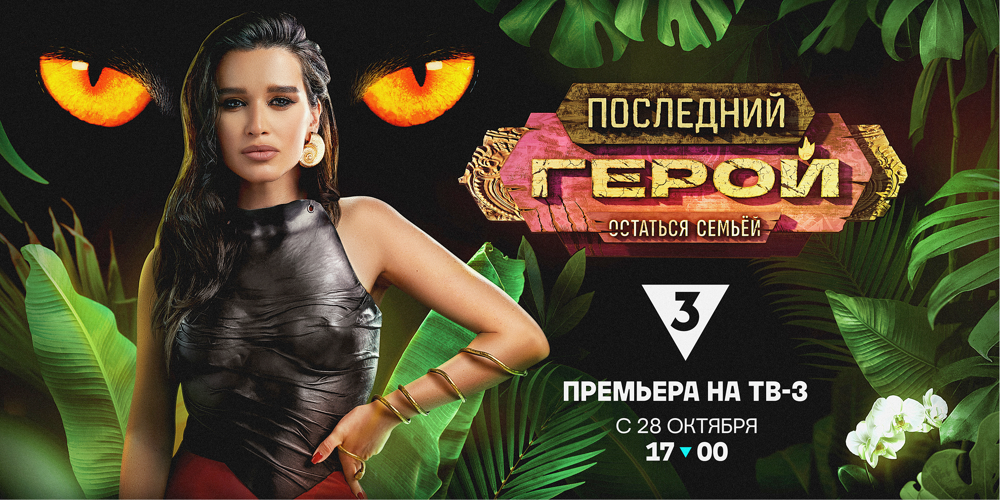

ТВ-3 · 2023–2024
«Последний герой»: оформление сезонов ТВ-3
Оформили два сезона «Последнего героя» на ТВ-3: сделали объёмные логотипы, заставки, титры и анонсы премьер.

Для ТВ-3 мы оформили «Русский сезон» и сезон «Остаться семьёй» шоу «Последний герой». В обоих случаях встроили объёмный логотип в предметы внутри кадра. Материалы и окружение менялись вместе с местом действия.
В «Русском сезоне» логотип стал резной деревянной вывеской с народным орнаментом. В «Остаться семьёй» он появляется на сундуке и камне среди джунглей. Этот приём связал заставки, титры и анонсы премьер каждого сезона.



